You don't swing every sword yourself in Ultima VII. Your companions fight on their own, and each one follows a strategy you pick from a tiny picture. Here's what each picture means, what that fighter will actually do, and a few setups that work.
The behavior comes from the source code of Exult, the engine most people play these games with today. We read the code and wrote our own descriptions. The icons on this page come from our own copies of the games, and the screenshot is from our own playthrough. Exult recreates the original engine, and where its authors say they guessed, you'll see a gold "to verify" tag.
The icons are the same in both games. Only the screen they're on changes.
Open a character's inventory (double-click them, or press I to step through the party). Each inventory has its own strategy icon and halo, so you set people one at a time.
Open anyone's paperdoll and click the crossed swords
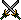
. The Combat Status screen shows the whole party side by side, so you can set everyone at once.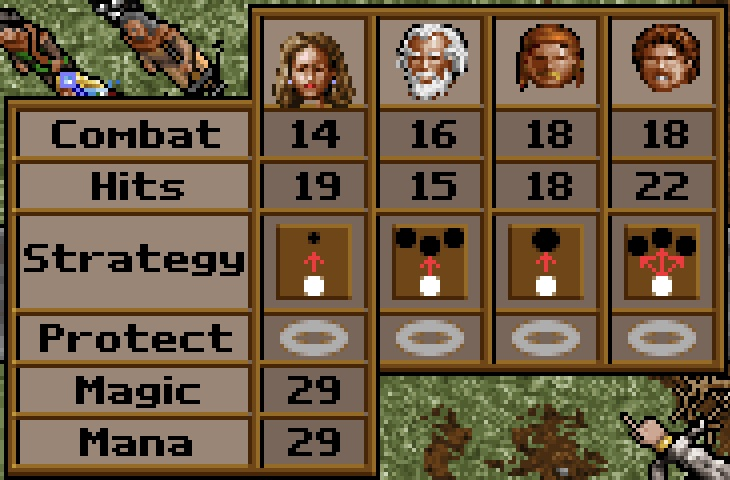
| Row | What it shows |
|---|---|
| Combat | Fighting skill. Higher means more hits land. Trainers raise it. |
| Hits | Hit points right now. When a companion drops below 3, they run (see Good to Know). |
| Strategy | Who this person goes after. Click to change it. |
| Protect | The halo. Click it to make this person the one your Protect fighters guard. |
| Magic / Mana | The Avatar's only. Magic is the most mana you can hold; Mana is what's left for spells. |
In each picture the white dot is your fighter, black dots are enemies, and the red arrows show where your fighter goes. They're listed in the order a click steps through them.
| Strategy | What the picture shows | What your fighter does | Good for | |
|---|---|---|---|---|
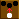 | Attack Nearest | An arrow to the closest of three enemies | Goes for the closest enemy. Prefers one nobody else is already fighting, and ignores enemies that are running away. | The default. Fine for almost everyone |
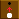 | Attack Weakest | An arrow to one small enemy | Goes for the enemy with the lowest Strength, wherever it is on the field. | Thinning out a swarm fast; weaker companions |
| Attack Strongest | An arrow to one big enemy | Goes for the enemy with the highest Strength, even if smaller ones are closer. | Your best fighter, against a boss with helpers | |
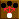 | Berserk | Arrows to every enemy | Charges in and attacks whoever is nearest or a random enemy. Never retreats, even near death. | A tough fighter you'll keep healed |
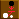 | Protect | You step between an enemy and a small white dot (the person you're guarding) | Attacks whoever is going after the person wearing the halo. If nobody has the halo, or nobody is attacking them, picks the first enemy it finds. | Bodyguarding a weak companion |
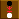 | Defend | An enemy's arrow stopped by a bar in front of you | Fights cautiously. In Exult, takes the nearest enemy while healthy and switches to the weakest below half hits. to verify | Companions you want to keep alive |
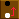 | Flank | An arrow curving around to the enemy's side | Joins a fight someone else already started, to gang up on one enemy from the side. to verify | A second fighter backing up your lead |
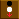 | Flee | An arrow pointing away from the enemy | Doesn't fight. Runs from the battle and comes back to follow you once it's over. | Badly hurt or low-level companions |
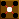 | Random | You, surrounded, with arrows every which way | Picks an enemy at random, trying for one nobody else is fighting. | Rarely the best choice |
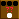 | Manual | Question marks over the enemies | Avatar only. The Avatar won't pick a target alone. In combat mode, double-click an enemy to attack it. | When you want control, e.g. to avoid hitting a bystander |
One halo for the whole party.
| Gray | Off. This person isn't being guarded. | |
| Gold | On. Everyone set to Protect goes after this person's attackers. |
Only one person can wear the halo. Turning it on for someone turns it off for everyone else. The halo does nothing by itself: you also need at least one companion set to Protect.
The things that surprise people
Starting points. Adjust to your party.
| Situation | Try this |
|---|---|
| Everyday fights | Everyone on Attack Nearest. Leave the halo off. |
| Boss with helpers | Your strongest fighter on Attack Strongest. Everyone else on Attack Weakest to clear the helpers. |
| A weak companion along | Halo on the weak one, set to Flee or Defend. One or two strong fighters on Protect. |
| Crowded town or friendly bystanders | Avatar on Manual, so you only hit what you click. |
| Hard fight, lots of healing | Your toughest fighter on Berserk so they don't break off, and keep healing potions or the Heal spell ready. |